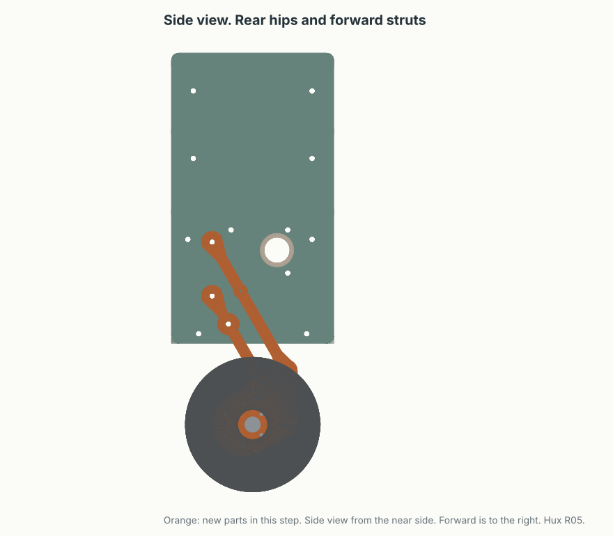

V1-PROOF / Engineering project
Mechanical assembly
The R05 two-leg body, its drawings and print files, and the joint details that connect the parts.
ME-05 / Two-leg body R05 / 14 October 2026
Rear hips, inner servos and a battery tray
R05 is the current build. The hips are 30 mm rearward of the body centre, and the struts slant forward to the wheels. The battery is in a tray at the bottom of the body, and each wall has an optional servo cradle. The frame is assembled. V1-PROOF locks both legs at 30°. Powered hips return in the next version.

ME-01 / Assembly geometry
General arrangement
Small gearmotors at the wheels. Simple parallel links and reduced servos at the legs. Pololu 4752 wheel gearmotors and ST3215 12 V leg servos are locked into this build. Change the pose to inspect the proposed envelope. The mounts remain subject to received-part measurements.

Upright geometry only. The drawing does not simulate balance or validate component fit. Dimensions in millimeters.
Explore the assumptions
- Upright height
- Axle behind pivot
- Static servo demand
- Servo from neutral
3:1 reduction · 60/40 wheel load split · assumed 85% transmission efficiency. Static load only. Mounted tests are still necessary.
Equations, mass budget and limits ↗Planning model. This drawing uses the original layout, with the struts slanted rearward and a 15–45° range. The anatomy page shows the R05 layout. The 3:1 ratio, the loads and the height travel apply to both.
The tradeoff: height adjustment also moves the axle about 49 mm fore/aft. Measure the center of mass and pitch trim at each pose. Start with the legs pinned. Qualify powered leg-height motion on the free-standing robot after balance works. Supported single-leg bench tests can start earlier.
ME-02 / Drawing register
Layouts & fabrication references
Geometry and print-kit references, with their release status kept visible.
| Reference | Purpose | Status |
|---|---|---|
| ME-05 / R05 assembly guide | Parts, hardware and eight assembly steps for the two-leg body, with CAD views | Current / frame assembled, hip holes agree |
| ME-05 / R05 kit and CAD checks | STL, STEP, parameters, plates and the leg sweep validation | Current / CAD checks passed |
| AN-01 / Animated anatomy | Top, side, front and 3D views in the R05 layout, with leg motion, balance lean and an electronics x-ray | Current / estimate |
| JD-03 wheel drive mount | Pololu 4752 to the carrier and the Ø100 wheel, with live clearance checks. R05 uses this carrier. | In R05 / unmeasured |
| Joint detail sheets | Driven pivot, passive pivots, wheel axle | JD-01 and JD-02 placeholders / pending measurements |
| General arrangement | Side/front envelope and target dimensions | Planning geometry, before R05 |
Superseded / R01–R04
Earlier revisions
R05 replaces these kits. Keep them for the history. Do not print or assemble from them.
| Reference | Purpose | Status |
|---|---|---|
| ME-04 / R04 one-leg body | Matched frame and component mounts, hips on the centre line | Superseded by R05 |
| ME-03 / R03 one-leg body | Earlier body, decks, lock link and carrier | Superseded after body fit problems |
| ME-00 / R01 passive kit | Passive link test, assembly sheet and render | Superseded |
| Carrier R02 template | 1:1 paper template of the JD-03 carrier | Included in R03 and later |
| One-leg bench template | Fixture and clearance reference | R01 setup reference |


Source documents: mechanical design · sizing & load estimates · bench preparation.